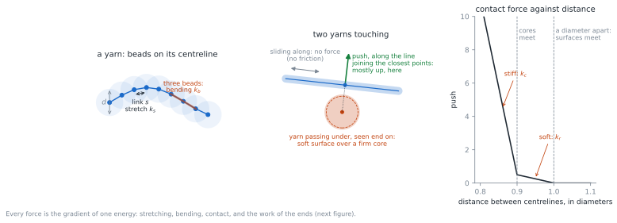
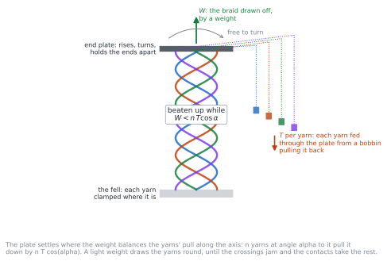
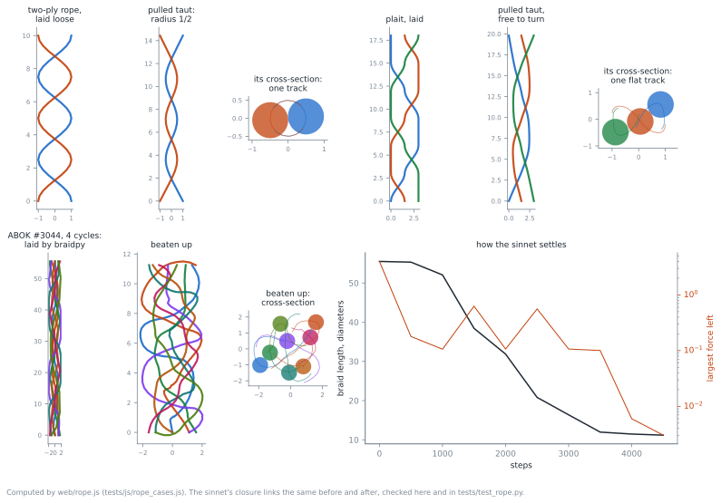

Settling a braid by physics
Braid Studio can tighten a braid two ways. Sideways (web/tighten.js,
the JavaScript twin of braidpy.take_off.tighten_yarns) moves each sample of
each yarn sideways only, so every sample keeps the height it was laid at: the
braid keeps the pitch it was laid with, and a braid laid loose stays loose —
and round, whatever its pattern. A real braid is not made so. Each new crossing
is beaten up against the ones before, until the crossings jam; the pitch, and
the shape of the cross-section — round, square, triangular — are what jamming
leaves.
By physics (web/rope.js, in beta, for disk braids and braid words) lets the braid find
that state itself. This page explains how, and what it does and does not do
yet. Made on a marudai (web/marudai.js, last below) makes the braid as
a braider would, move by move: so far, the one that gives sinnets their
shapes.
The model

Each yarn is a chain of beads on its centreline, half a diameter apart. Its energy is the sum of
term |
per |
energy |
in the page |
|---|---|---|---|
stretching |
link |
\(\tfrac{k_s}{2}\,(\lvert x_{i+1}-x_i\rvert - s)^2\) |
\(k_s = 100\): yarn stretches 1 % under its tension |
bending |
bead |
\(\tfrac{k_b}{2}\,\lvert x_{i-1}-2x_i+x_{i+1}\rvert^2/s^2\) |
\(k_b = 0.5\): slight |
contact, surfaces |
pair of segments |
\(\tfrac{k_r}{2}\,(d - r)^2\) when \(r < d\) |
\(k_r = 5\) |
contact, cores |
pair of segments |
\(\tfrac{k_c}{2}\,(d - w - r)^2\) when \(r < d - w\) |
\(k_c = 100\), \(w = 0.1\,d\) |
where \(r\) is the distance between the closest points of two segments, of two different yarns or of one yarn far apart along it. A yarn is a firm core in a soft surface: two yarns feel each other coming, meet gently, and touch at about a diameter. Lengths are in yarn diameters, \(d = 1\).
Forces between yarns, and the vertical
The contact force between two segments acts along the line joining their closest points, in three dimensions. Where one yarn passes over another — at a crossing — that line is mostly vertical, so the push between them is mostly vertical: this is what carries the beating from crossing to crossing down the braid, and what jams them. Where two yarns lie side by side, the line is horizontal, and the push packs the cross-section.
There is no force along the yarns’ surfaces: no friction. Yarns slide freely along each other, and along themselves through the crossings (see feeding, below). That is the simplest model that has a single energy; what friction would add is discussed under Friction, below.
The ends

The fell. Each yarn’s newest end is clamped where it was laid.
The end plate. Each yarn’s oldest end is fixed to a plate. The plate rises or sinks, and may turn about the axis, but never lets the ends move with respect to one another: nothing can come unbraided at the end. A force \(W\) draws it up: the weight the braid is drawn off with.
Feeding. Each yarn slides through its place on the plate, from a bobbin pulling it back with a tension \(T\), as a braid’s yarns come from their carriers. The yarn inside the braid then costs \(T\) per unit length, and how much of it there is becomes an unknown too: each yarn’s link rest length \(s\). When the links grow too long or too short, the yarn is laid out again with new beads.
With \(n\) yarns at an angle \(\alpha\) to the axis, the yarns pull the plate down by \(n\,T\cos\alpha\). While the weight is lighter, the plate sinks, drawing the yarns round, until the crossings jam and the contacts take the rest. The page uses \(T = 1\) and \(W = n/4\): braids beaten up hard.
The solver
The minimum of the total energy, including the work of the weight and of the bobbins, is the braid at rest. It is found by FIRE (Bitzek et al., Phys. Rev. Lett. 97, 170201, 2006): damped dynamics that speed up while going downhill and stop dead when going up. Every force is the gradient of the one energy, so at rest they balance. Each step:
Rebuild the list of segment pairs near enough to touch, if any bead has moved a quarter diameter since it was built.
Compute the forces: stretching, bending, contact, on each bead; on the plate, the weight and the pull of the yarns’ last links; on each yarn’s rest length, its tension against its bobbin’s.
FIRE: turn the velocities towards the forces; if the power (force times velocity) is negative, stop everything, halve the time step, and start again from rest; if it has been positive for a while, lengthen the step.
Move every bead, no bead more than a tenth of a diameter in one step, so no yarn can pass through another between two checks.
Lay a yarn out again with new beads if its links have grown too long or too short.
It stops when no force is larger than \(10^{-3}\).
Getting there
The laid yarns are first pulled clear of each other sideways (100 steps of
tighten.js, or more if asked): laid as braidpy lays them, two crossing yarns
may pass through the same point, and an overlap left for the physics to push
apart could part the wrong way.
What it gives, and how it is checked

tests/test_rope.py checks the solver against physics:
A two-ply rope, its end held from turning, pulled taut: it closes until the yarns touch, a helix of radius half a diameter, and rises as far as the yarns’ length lets it.
The same rope, free to turn: it untwists, as a frictionless rope must.
A plait, free to turn: it stays the same plait — the braid word read back off the settled yarns is the one laid — and barely turns. braidpy lays the plait (
braidpy.parametric_strand.strand_paths) and reads the word back (braidpy.symmetric_braid.braid_word).A sinnet beaten up, and one made crossing by crossing: no yarn has passed through another. That is checked on the braid’s closure, each yarn’s top end joined round the outside to the bottom end beside it: the linking numbers of its loops, computed exactly from the yarns as polylines (
braidpy.linking), must not change. A yarn passing through a yarn of another loop changes their linking number by one, however the yarns fold — and beaten-up yarns do fold, so a braid word read off them would not do.
The tests run the physics in Node and check its results with braidpy. ABOK #3044 over 4 cycles beats up from 55 to 11 diameters long in about 5 s in Node; a browser takes about the same.
In Python. braidpy.rope and braidpy.form are rope.js and
form.js in Python, step for step, to read and to check them by; pure
Python, they are tens of times slower. Given the same numbers from the
maths library — cos and sin rounded to single precision on both sides, and
JavaScript’s Math.hypot — they settle and make the same yarns bead for
bead, through 37 467 steps to rest and through every re-laying of the beads
(tests/test_rope_python.py). Each with its own library, unlike the
marudai’s shuffled moves, the physics forgets the last digit as it comes to
rest: a plait of six crossings beaten up ends with its beads within 0.004
diameters of JavaScript’s, and made crossing by crossing, beaten up as far,
12 diameters, within 0.012 of each other; both read back as the plait laid.
Making it crossing by crossing, with friction
Beaten up all at once, under one weight, a long braid takes a long while: the
weight must draw the whole laid length down, and the solver’s steps are short.
And friction would only freeze it part way. A braid is not made so: it is
made a crossing at a time, each new one beaten up against the made braid,
and friction holds what is made. web/form.js makes it so — the third
Settle choice, made crossing by crossing, with friction, then settled.
The yarns, as braidpy laid them (their crossings in the order they are made), are in three parts:
made: below a working window, the braid beaten up so far, frozen;
working: the window, about two rows, where the yarns move, with the stretching, bending and contact above, plus friction;
to come: above it, the rest of the braid as laid, moving as one block. The yarns’ tension draws it down onto the window and a weight draws it up, as the end plate above: while the yarns pull harder, the newest row is beaten up against the made braid, until its crossings jam.
Each yarn slides into the window from the block at its tension, as from a bobbin. Once the window is at rest, all but its top two diameters are frozen into the made braid, and the window takes in the next row from the block. The block only moves as one, and nothing in the window passes through what is above or below it, so the braid made is the braid laid: the linking numbers check it, as above.
Friction. Two yarns in contact hold each other along their surfaces with a spring, from where they first touched, until its pull reaches \(\mu\) times the push between them, when they slip: Coulomb’s law, as the discrete element method has it (\(\mu = 0.3\), spring stiffness 20). The springs are kept from step to step and from row to row: the window remembers. Friction is not the gradient of any energy, but FIRE needs only forces, so the window is settled the same way.
Then settled. The made braid is a good start, not the end: each row was
beaten against a frozen braid, and the frozen braid keeps whatever twist and
width it was made with. So the whole is settled afterwards by rope.js, as
the second Settle choice does from the laid braid — which, from this start,
takes a second or two.
ABOK sinnet |
laid |
beaten up at once |
made crossing by crossing |
then settled |
|---|---|---|---|---|
#3044, 8 strands, 4 cycles |
55.5 long |
11.3, in 4.5 s |
13.1, in 6 s |
11.1, in 1.5 s more |
#3048, 17 strands, 3 cycles |
204 long |
6.2, in 1 to 1.5 min |
7.9, in 1.5 min |
6.1, in 1 s more |
Lengths in yarn diameters; times in Node on one machine, measured again for this version; a page in a browser takes about the same. Friction changes little here: #3044 is made 13.1 long with it, 12.6 without.
Made on a marudai, move by move
web/marudai.js makes a disk braid the way braid3dmin, a kumihimo
simulation in three.js, makes it: yarns as chains of beads pulled by their
bobbins, each move laid over the top and drawn tight, the braid relaxed from
what moved and turned to balance. The method, as braidpy implements it, is
set out in a page of its own and not repeated here; the code is
this project’s own. braidpy’s disk program — the slots the yarns start in, then
per step which yarns move, by how much — is played move by move. What
marudai.js does its own way:
Units and frame. Inside, lengths are half a diameter and y is up, as the method is given; what comes out is in yarn diameters, z up.
Speed. The beads are kept in flat arrays rather than objects, their neighbours found in a grid of cells rather than registered in every cell around, and looked up once per move rather than twice.
The made braid is frozen well behind each yarn’s end, so only the newest rows move.
Checked against braid3dmin itself, run headless on the same moves (not part of this project):
braid3dmin |
marudai.js |
|
|---|---|---|
ABOK #3073, 20-strand square, 11 cycles, from a braid3dmin design |
23.6 long, square, in 117 s |
23.7 long, square, in 12 s |
ABOK #3044, 8-strand triangle, 10 cycles, braidpy’s program |
23.1 long, in 260 s |
23.6 long, in 26 s |
Lengths in yarn diameters, times in Node. Seen from above, the yarns of #3073 halfway up run in the same square grid, the same 2.6 diameters from the axis on average; the order beads are moved in changes a braid’s length by a few per cent. It is faster for the reasons above.
In Python. braidpy.marudai is the same algorithm in Python, step
for step, to read and to check it by; it is pure Python and tens of times
slower. Given the same numbers from the maths library — cos, sin, atan2 and
asin rounded to single precision on both sides, and JavaScript’s
Math.hypot — the two make the same braid bead for bead
(tests/test_marudai_python.py). Each with its own library they differ in
the last place (Python’s math.hypot is correctly rounded, V8’s is not, a
third of the time), and thousands of relaxation steps make that visible, as
they would any change: a plait of 3 strands made over 8 crossings comes out
5.33 diameters long in JavaScript and 5.14 in Python, its yarns crossing
half way up alike. Twisting a held braid in is the most sensitive: when the
twist first draws a rope down to the tip changes with the last digit, so
after 6 turns of three bobbins one rope is 0.5 diameters long and the
other 4.7; after 18 they are alike again, 15.0 and 15.7.
It makes the braid as a marudai does, the made braid hanging below the fell, the yarns going out and up to their carriers; seen from above, the disk’s slots go round as braidpy numbers them. The page draws a braid’s fell at the bottom, as a braiding machine makes it, so the braid is turned upside down for it: a half turn about a horizontal axis. Only flipping its heights would have shown its mirror image — the sum of the Gauss linking integrand over its pairs of yarns, which a mirror flips, says it is the same braid, by hand, as braidpy’s.
Braid words. A braid word is made on the marudai too, its row of
strands rolled onto a ring of bobbins, evenly round it so their pull is
balanced. Each crossing is two neighbours swapping places: the one passing
under goes most of the way first, the one passing over is laid across it,
then the first goes the rest of the way. A full run of crossings round the
ring, σₙ₋₁…σ₁ or its inverse, is the bobbins all turning one place round
— braidpy.annulus_braid.turn, as a braider lays up a rope — rather
than one strand carried all the way round under the others, which the
pull cannot draw down to the tip; the ring is numbered whichever way round
finds the more such runs, the other way being a half turn of the whole
braid about its axis. A braid word is held, as a braider holds a plait:
it does not turn to balance, and turning the bobbins twists the yarns in.
Read back with solid_word, the moves are
the word; made, the braid has the word’s hand, by the sign of the Gauss
linking sum. With six strands or fewer, the yarns start on a ring wide
enough for them to clear each other.
Plaits and braids of alternating crossings come out well. Rope-like words
— two-ply, or σ₁σ₂σ₃ over and over — come out with the right twist but
short: the pull, mostly outwards to the rim, draws a rope’s twist in at
the tip less than it draws a sinnet’s crossings.
Machines are tightened sideways for now: their carriers’ paths, rather than their words, should drive the moves, so the braid made keeps in step with the drawing of the machine.
What it does not check: that the braid made is the one braidpy laid. A move passes over the yarns on its way, the short way round, as braidpy’s disk crossings do; a move of more than nine tenths of a half turn is made in two halves, so it goes round the side braidpy’s goes.
Limits, and what is next
Speed. A 17-strand sinnet (ABOK #3048, 3 cycles) is laid 204 diameters long, about 7000 beads, and takes a minute or more to beat up, at once or crossing by crossing: the page’s progress shows little for a long while, then rises. The time step is set by the stiffest springs; the length to travel, by how long the braid is laid. Fewer beads (the made part frozen), a shorter start, or the GPU would help.
Shapes. Made on a marudai, sinnets take their shapes (above). By the two other settles, cross-sections start to differ — #3044’s tracks lean toward a triangle — but the yarns are not packed tight yet: gaps remain. Made crossing by crossing, the braid keeps the width it was laid with: braidpy lays a sinnet’s strands round a ring, the first rows freeze at that ring’s radius, and each later row is beaten against them and pressed by the laid braid above, at the same radius. A real braid draws in to the fell, its yarns spreading out above it to their carriers: the block above should rather be yarns running out to carriers.
Which braids. Any. A braid forms on a fell ring about its own size, yarns being as thick as they are, and braidpy lays it so: a machine’s braid, or a braid word in a row, on a ring as tight as its yarns allow. Drawn in to a single point instead, as they once were, all the yarns would meet there and could untwist through it whatever holds them. Laid on the ring and settled, braids keep their closures’ linking numbers: flat 9, princess, tubular 12 and soutache 5 made 2 cycles, the plait and
1 2 -3 4among words. A braid word to settle by physics is still laid round a ring of bobbins, as a disk braid is, the moves a marudai makes. Round rigid cores a machine’s braid only settles sideways: the physics has no rigid yarn.Pulling clear. Sideways tightening works level by level: two yarns can circle each other at one level without touching, and undo a turn of the braid between levels. Before the physics, the yarns are pulled clear ten rounds at a time, and the round before any pair’s winding changes by half a turn is kept.
Tried and dropped. Laying rows closer, to start shorter, was tried and dropped: on rows a diameter apart the sideways clearing can push one yarn past another, which the linking numbers caught.
References
E. Bitzek, P. Koskinen, F. Gähler, M. Moseler, P. Gumbsch, “Structural relaxation made simple”, Phys. Rev. Lett. 97, 170201 (2006): FIRE, the solver.
P. A. Cundall and O. D. L. Strack, “A discrete numerical model for granular assemblies”, Géotechnique 29, 47 (1979), doi:10.1680/geot.1979.29.1.47 (not free to read): friction as a tangential spring capped by Coulomb’s law. Free to read, the same tangential spring among other contact models: “Review of contact models used in Discrete Element Method (DEM)”, arXiv:2509.07461.
C. Ericson, Real-Time Collision Detection (Morgan Kaufmann, 2005), §5.1.9: the closest points of two segments, for contact.
M. Teschner, B. Heidelberger, M. Müller, D. Pomeranets, M. Gross, “Optimized spatial hashing for collision detection of deformable objects”, Vision, Modeling, and Visualization (2003): the grid of cells that finds which segments may touch.
K. Klenin, J. Langowski, “Computation of writhe in modeling of supercoiled DNA”, Biopolymers 54, 307 (2000): linking numbers of polygons, exactly.
D. Rolfsen, Knots and Links (Publish or Perish, 1976), §5.D: linking numbers from crossings.
Made by its carriers
Made crossing by crossing, the braid is still made from the braid braidpy
laid. braidpy.carried lays nothing: a horn gear machine’s carriers go
round their tracks, at the machine’s real size, and each pulls its yarn, at
a steady tension, up through a forming ring into the braid, which is taken
off above at a steady rate. The yarns near the ring are beads, settled with
the same stretching, bending, contact and friction as
crossing by crossing;
what differs:
Where the yarn comes from. Not a block of laid braid above, but the carrier below. Each yarn runs straight from its carrier’s eye up to ten diameters under the ring; from there it is beads. Its lowest bead is pulled towards the eye, and yarn is paid out, a bead at a time, as the braid draws it up, or taken back as it slackens: a carrier’s tensioner. No bead is renamed, so each contact keeps its friction for as long as it lasts.
The forming ring, a torus of wire round the axis, three centimetres over the carriers’ eyes: the yarns pass inside it, and it brings them together where the braid forms.
Friction is what makes the braid. Without it, two taut yarns slide to wherever they touch, just below the braid, and stay there: the braid taken off has no crossings at all. With it, each crossing is held where it was beaten up, and carried up with the braid.
To scale: lengths are in diameters of 1100 dtex yarn, about 0.4 mm, a gear 140 of them across, so the braid is seen as small as it is beside the machine making it.
On the three-gear flat machine, the plait made crosses as the braid laid off
the machine does, crossing for crossing (tests/test_carried.py).
examples/demo_carried.py draws it twice: near, the braid formed above the
ring, its yarns as thick as they are; and to scale, the deck, the carriers,
the yarns’ runs and the ring. It is pure Python, some ten seconds a step of
the machine: not in Braid Studio yet.